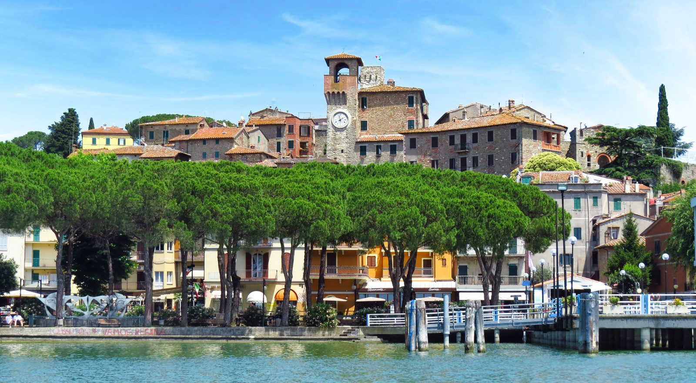
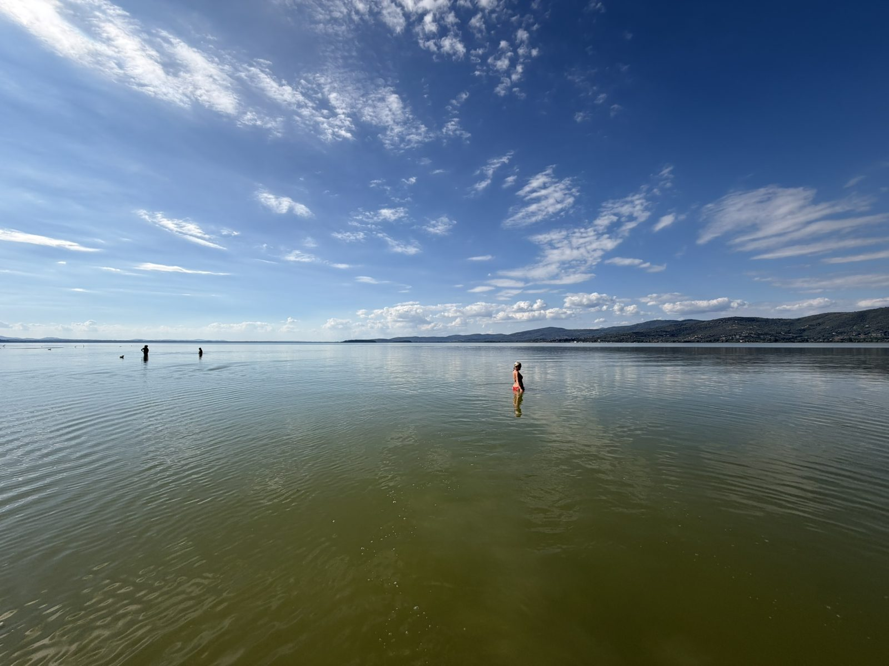
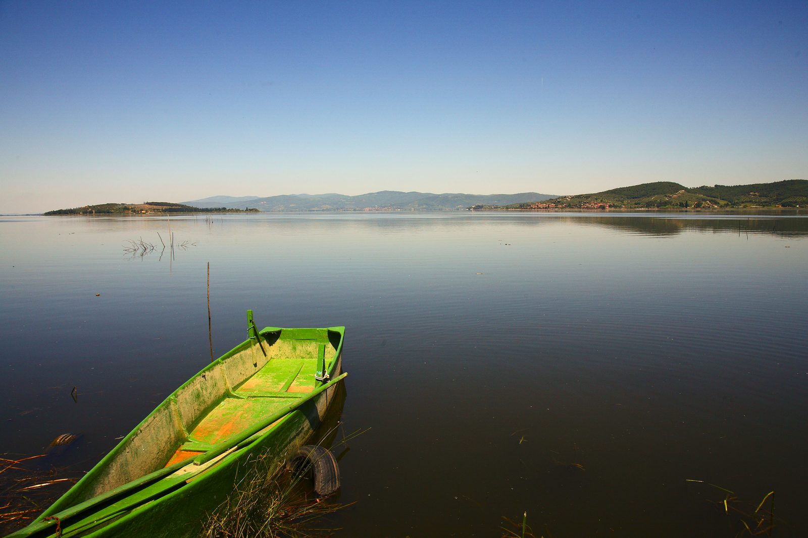

There are some landscapes you understand better when you travel through them slowly. Lake Trasimeno is one of them.
From a car, you see flashes of water between the trees, a succession of small towns and occasional views towards the islands. On a bicycle, the lake becomes the constant companion. Reeds move beside the path. Fishing boats sit offshore. Herons rise from the shallows. Hill towns appear across the water and disappear again as the shoreline curves away.
And because a cycling route runs for almost 60 kilometres around Lake Trasimeno, you can spend an entire day travelling through this landscape without needing a car.
We recently cycled the complete circuit, starting near Sant'Arcangelo and travelling clockwise around the lake. With electric bikes, it turned out to be one of those almost perfectly balanced days: enough cycling to feel that you had actually achieved something, but with plenty of time for coffee beside the water, lunch beneath vines in Passignano, a swim in the lake and a final ice cream as the afternoon light began to soften.
Around 60 kilometres. One lake. And an entire day to explore it.
Why Cycle Around Lake Trasimeno?
Lake Trasimeno sits just inside Umbria, close to the Tuscan border, surrounded by low hills, olive groves, vineyards and medieval towns. It is Italy's fourth-largest lake, but it feels very different from the better-known lakes of northern Italy. There are no dramatic Alpine peaks. No grand villas lining the shore. No procession of luxury hotels.
Trasimeno is quieter and softer. Its water is remarkably shallow, its shoreline edged with reeds and wetlands, and much of the landscape still revolves around fishing, farming and small communities that have lived beside the lake for centuries. The cycling route allows you to experience all of that at exactly the right speed.
The official circuit is roughly 57 kilometres, although by the time you've diverted into towns, ridden to cafés and explored along the way, it's sensible to think of it as a 60-kilometre day. Most importantly, it is almost completely flat. That makes it achievable for reasonably active cyclists on conventional bikes and surprisingly easy on an e-bike.
Do You Need an E-Bike?
Absolutely not. There is very little climbing on the circuit itself, so experienced cyclists will have no difficulty completing the loop on a normal hybrid, gravel or mountain bike. But this is one occasion when an electric bike makes a great deal of sense.
The pleasure of cycling around Trasimeno isn't in completing the circuit as quickly as possible. It's in stopping. You want to have coffee in Castiglione del Lago. Spend time over lunch in Passignano. Go swimming. Walk through the towns. Stop to take photographs. Have an ice cream. An e-bike removes the pressure of wondering whether you'll have enough energy left for the final 15 kilometres.
We hired ours from BikeFlow (WhatsApp +39 320 678 8063 to reserve), based at Trasimeno Glamping Resort near Sant'Arcangelo, directly beside the lake. The bikes were excellent, with powerful assistance and enough battery range to complete the entire circuit comfortably. Even if using the higher assistance settings for much of the day, the range wouldn't be an issue.
Starting here also worked particularly well for the rhythm of the day. We set off at around 9.30am and cycled clockwise. That put Castiglione del Lago at exactly the right distance for morning coffee, Passignano perfectly for lunch and San Feliciano towards the end of the afternoon.

What Is the Cycle Path Actually Like?
Don't imagine a perfectly surfaced urban cycleway running continuously around the water. This is much more enjoyable than that.
Large parts of the route follow gravel and compacted-earth tracks through countryside, beside reed beds and close to the shoreline. Other sections use quiet roads and paved cycle paths. There are a few places where the route runs alongside busier roads, particularly on the western and southern sides of the lake, but these are relatively short compared with the whole journey. For much of the day, traffic simply disappears.
One of the best things about the route is how easy it is to follow. The circuit is well signposted, and we completed it without needing to navigate constantly with a phone or satnav. You simply keep following the lake.
A hybrid, gravel bike, mountain bike or suitably robust e-bike is preferable to a narrow-tyred road bike, particularly after wet weather when unpaved sections can become softer. And then you can concentrate on the landscape rather than the route.
First Stop: Castiglione del Lago
Starting from Sant'Arcangelo, cycling clockwise brings you first towards Castiglione del Lago. It's a wonderful first stop because it also introduces the long history of the lake.
The town occupies a promontory projecting into Trasimeno. In antiquity, when water levels were higher, it was effectively the lake's fourth island. The surrounding territory was connected with the Etruscan city of Chiusi before becoming Roman, and its strategic position meant that Castiglione remained contested throughout the medieval period. Above the lake stands the Rocca del Leone, the great polygonal fortress that still dominates the skyline.
If you're spending a whole weekend around Trasimeno, it deserves a proper visit. On a 60-kilometre cycling day, however, we had another priority. Coffee.
We stopped beside the water at Café Pescatore Praia @pescatorecafe, where there was plenty of room to leave the bikes and tables looking directly across the lake. After the first section of the ride, it was exactly what we wanted: coffee, breakfast and the water a few metres away. Then back on the bikes.
A Lake With an Ancient Past
As you cycle around Trasimeno, it is easy to think of the lake as a peaceful rural backwater. Historically, it was anything but. People have lived around these shores since prehistoric times, and the surrounding landscape later formed part of the worlds of the Etruscans and Romans.
Its most famous moment came in 217 BC, during the Second Punic War. The Carthaginian general Hannibal had crossed the Alps into Italy and was advancing south. Near the northern shore of Lake Trasimeno, he prepared one of the most devastating ambushes in ancient military history.
The Roman consul Gaius Flaminius led his army along the narrow ground between the lake and surrounding hills near modern Tuoro. Hannibal's forces were waiting. Hidden across the slopes, the Carthaginians attacked the Roman column as it became trapped between the hills and the water. Thousands of Roman soldiers were killed, including Flaminius himself.
More than two thousand years later, the landscape is still associated with the battle. Around Tuoro, place names such as Sanguineto and Ossaia preserve echoes of its violent past, and a historical trail follows locations associated with the fighting.
Today, you cycle through the same landscape with barely a sound beyond birds, tyres on gravel and the occasional train. It's a strange contrast.
Through Tuoro and Towards Passignano
The northern shore brings you through the territory around Tuoro sul Trasimeno, closest to the site of Hannibal's famous victory. Tuoro is also one of the gateways to Isola Maggiore, the only permanently inhabited island in the lake. Ferries leave from nearby Punta Navaccia, and if you're staying in the area for several days, the island makes an excellent separate excursion.
For today's ride, keep following the shore towards Passignano. The scenery gradually changes again. The hills close in towards the lake and Passignano appears ahead, squeezed between the water and the slopes behind it. By now, you'll be ready for lunch.
Lunch in Passignano sul Trasimeno
Passignano sul Trasimeno is one of the most attractive towns on the lake. Its strategic position made it important for centuries, and the remains of its medieval Rocca still rise above the old town. Leave the bikes below and wander uphill if you have the energy. The higher you climb, the better the views become across the lake and towards its islands.
But first, lunch. We ate at Trattoria del Pescatore (delpescatore.com), tucked into a backstreet beneath a canopy of vines. It feels wonderfully removed from the busier waterfront. This is the kind of restaurant we always hope to find when travelling: unpretentious, atmospheric and clearly popular with people who actually live nearby.
Lake fish is the obvious choice. Try the persico — lake perch — or explore the other local dishes on the menu. Fishing has shaped life around Trasimeno for centuries, and eating freshwater fish here connects the meal directly with the landscape you've spent the morning cycling through.
Take your time. A long lunch is entirely justified when you've already cycled halfway around a lake.
Passignano's Medieval Past
Before leaving, spend a little time exploring Passignano itself. The town grew around its fortified position on the northern shore, controlling an important route between Umbria and Tuscany. Its medieval centre climbs steeply away from the waterfront through narrow streets towards the Rocca.
The fortress was developed over several periods and became part of the long struggles for control of this strategically important borderland. Today, what remains provides one of the best viewpoints around Trasimeno. From above, the geography of the lake suddenly makes sense. The islands sit out in the water. The Umbrian hills rise behind them. And somewhere along that distant shoreline is the route you've already cycled.
An Afternoon Swim
Leaving Passignano, continue clockwise towards Torricella, Monte del Lago and San Feliciano. This was one of our favourite stretches of the day. By afternoon, the lake had warmed in the sun and a swim was becoming increasingly difficult to resist.
We stopped beside Albaia Beach Bar & Lounge @albaia_montedellago, next to the TWC Trasimeno Windsurf Club. In summer, this is an obvious place to stop because the facilities are operating. But don't discount it outside the main season. Even when the beach facilities are closed, the shore remains accessible and locals still come here to swim. A quick change and we were in.
One thing that surprises first-time swimmers at Trasimeno is the lake bed. This is an extremely shallow lake, and the bottom here is soft and almost sand-like underfoot rather than rocky. The water remains pleasantly warm surprisingly late in the year. On a sunny autumn afternoon, after several hours on a bicycle, it was perfect.
No elaborate beach club required. Just leave the bikes, walk into the lake and cool down.

San Feliciano and the Fishing Traditions of Trasimeno
Continue along the shore and eventually you reach San Feliciano. Unlike some of the fortified settlements around Trasimeno, San Feliciano's identity has always been closely tied to the water. It remains one of the lake's traditional fishing communities and is home to the Museo della Pesca, which tells the story of fishing techniques, boats and everyday life around Trasimeno. It is also the departure point for boats to Isola Polvese, the largest of the lake's three islands.
By late afternoon, the little harbour becomes particularly beautiful. We stopped at the café near the ferry departure for an ice cream and watched the sun dropping lower over the lake. After almost a full circuit, it was difficult to imagine a better final stop. Boats moved around the harbour. The light softened across the water. And there were only a few kilometres left to cycle.

Back to Sant'Arcangelo
From San Feliciano, the route continues south towards Sant'Arcangelo. We arrived back at BikeFlow at around 5pm. That meant the complete circuit had taken roughly seven and a half hours.
But that is slightly misleading. We hadn't spent seven and a half hours cycling. We'd had breakfast beside the lake. Stopped for photographs. Eaten a proper lunch. Walked around Passignano. Gone swimming. Had an ice cream. And still completed an entire circuit of one of Italy's largest lakes before evening.
That's precisely why this route works so well. It can be a serious cycle ride if you want it to be. But it doesn't need to be.
Stay for Dinner Beside the Lake
If you aren't in a hurry to leave Trasimeno, don't finish the day when you hand the bikes back. The lake is particularly beautiful towards sunset, and there are some excellent places to turn the ride into a full day out with dinner beside the water.
In Castiglione del Lago
- La Pigra Tinca — an interesting choice if you want to continue exploring the food of Trasimeno. The restaurant overlooks the lake and takes a more contemporary approach to local ingredients, including freshwater fish.
- La Cantina — in the historic centre, in an 18th-century building, serving Umbrian-Tuscan cooking, Chianina beef and traditional lake fish, with a garden overlooking Trasimeno in the warmer months. @ristorantecantina_trasimeno
- Osteria Nova — combines the informality of an osteria with a more modern approach to local produce. @osterianova.castiglionedellago
In San Feliciano
- Osteria Rosso di Sera — specialises in lake cuisine and has a terrace facing Trasimeno, particularly appealing as the sun goes down. @rossodisera_osteria
- Ristorante Da Settimio — a family-run restaurant that has been serving food beside the lake for generations, with a panoramic veranda and a menu rooted in the cooking of Trasimeno.
After 60 kilometres of cycling, a swim and an afternoon ice cream, sitting beside the lake over dinner while the last light disappears across the water is a pretty good way to finish the day.
Can You Do It Without a Car?
Absolutely — and this is where Lake Trasimeno becomes particularly interesting for independent travellers. The railway runs along the northern and western sides of the lake, with stations including Passignano sul Trasimeno, Tuoro sul Trasimeno and Castiglione del Lago. Regional trains connect the lake with Perugia and with Terontola-Cortona, where connections open up towards Florence and the wider Italian rail network.
That makes it perfectly possible to build a car-free Trasimeno cycling trip. The easiest approach is to arrive by train and hire your bike locally rather than trying to transport one. If you're travelling with your own bicycle, designated Trenitalia regional services also accept assembled bikes, subject to available bicycle spaces and the appropriate supplement.
For a full circuit, check rental opening hours carefully before planning the day. You need enough time to collect the bike in the morning, complete the loop at a relaxed pace and return it before the shop closes.
And if 60 kilometres sounds too ambitious, don't abandon the idea. Simply cycle part of the lake. Because trains serve several points around the shoreline, you can create a shorter ride rather than treating the full circumnavigation as compulsory.
Where to Hire an E-Bike
We used BikeFlow at Trasimeno Glamping Resort, near Sant'Arcangelo, and would happily use them again. The location puts you almost directly onto the circuit, there is none of the stress of cycling through a large town before reaching the route, and the e-bikes had more than enough range for the complete lake circuit.
Another option is Trasimeno Slow Experience, which rents e-bikes from its base near Tuoro sul Trasimeno, around two kilometres from the cycle route.
If you're arriving by train, Castiglione del Lago is another useful place to begin the circuit because the town has its own railway station and several well-reviewed bike rental options. E-Bike Rent Castiglione @ebikerentcastiglione offers bikes and large-tyred "fat" e-bikes locally, while Valentini Bikes is another well-established option in Castiglione del Lago. Starting here simply changes the rhythm of the day: rather than stopping in Castiglione for morning coffee, you could collect your bikes here and make Passignano or San Feliciano your first substantial break.
Operators and seasonal opening arrangements change, and not every hire point is directly beside a railway station, so check current rental locations before travelling. Whichever rental company you choose, reserve e-bikes in advance during spring, summer and early autumn and confirm collection and return times before setting out on the full circuit.
The Ride at a Glance
- DistanceAround 57 km official circuit — plan for 60 km with detours
- TerrainAlmost completely flat; mix of gravel, compacted earth, quiet roads and cycle paths
- TimeAbout 7½ hours for us, including breakfast, lunch, a swim and an ice cream
- DirectionClockwise from Sant'Arcangelo: Castiglione for coffee, Passignano for lunch, San Feliciano for the afternoon
- BikeHybrid, gravel, mountain bike or e-bike — not a narrow-tyred road bike
- By trainStations at Castiglione del Lago, Tuoro and Passignano
When Is the Best Time to Cycle Lake Trasimeno?
Spring and autumn are ideal. In April, May and early June, the countryside around the lake is green and temperatures are generally comfortable for cycling.
September and early October may be even better. The fierce heat of high summer has gone, but the days can still be beautifully warm. Restaurants and cafés are quieter. The light becomes softer. And, as we discovered, the lake can still be warm enough for a swim.
July and August are certainly possible, but set off early. Much of the route is exposed and cycling 60 kilometres in the middle of an Umbrian summer day is a very different proposition. After prolonged rain, also check conditions. Significant stretches of the route are unpaved, and the surface can become muddy.
What to Take
You don't need specialist cycling equipment, but a few things make the day much easier:
- Plenty of water, sun protection and a lightweight waterproof layer
- Comfortable clothes suitable for cycling and shoes you don't mind getting dusty
- A swimsuit and a small quick-drying towel, if there's any possibility you might swim
More Than a Cycle Route
Cycling around Lake Trasimeno isn't really about completing 60 kilometres. It's about connecting places that make much more sense when experienced together.
Castiglione del Lago tells the story of a fortified frontier between Umbria and Tuscany. Tuoro takes you back to Hannibal and one of ancient Rome's greatest military disasters. Passignano brings medieval fortifications and fishing traditions. San Feliciano still looks towards the lake for its identity. Between them are wetlands, olive groves, beaches, islands, boats and long stretches where there seems to be nothing between you and the water.
And a bicycle allows you to move through all of it without sealing yourself inside a car.
Some of the best days in Italy really are that simple.